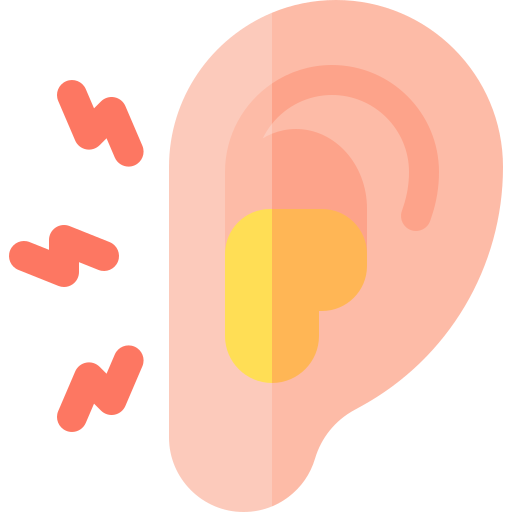

 中耳炎
中耳在哪裡?
中耳是耳膜後方的一個空腔，有耳咽管連接鼻咽部，維持中耳的平衡。相較成人，小孩子因為臉型尚未發育完全，耳咽管短且接近水平，一旦呼吸道感染，病菌容易入侵中耳，加上控制耳咽管的肌肉不夠成熟，鼻咽處的耳咽管開口旁也有腺樣體―這是一個充滿淋巴組織的腺體，為身體抵禦病菌的第一道防線；幼兒因為過敏及頻繁的呼吸道感染，腺樣體容易腫脹、肥大，因而影響了耳咽管的開闔，讓中耳積水難退。
成因
中耳炎是中耳部位的發炎，而這發炎通常是由於中耳受到病原體的感染所造成。中耳炎可以只發生在一側耳朵，也可以同時在兩側耳朵發生。中耳炎一般可分做急性中耳炎、積液性中耳炎，慢性中耳炎。急性中耳炎通常發生於兒童。在季節交換時期，急性中耳炎病例便會增多，與感冒的流行有明顯的相關。而急性中耳炎是因為鼻腔或咽喉的病毒，經過耳咽管進入中耳腔中造成的，而大部分孩童在二至五歲最容易發生中耳炎。
症狀
從耳鏡觀察耳朵，因為中耳充滿液體或者膿液，可看到耳膜紅通通、腫脹的樣子。孩子可能出現發燒、耳朵悶痛，或抱怨聽不清楚、明顯聽力變差、要求電視聲音開大聲一點、父母需要多呼喊幾次才有反應、耳鳴等。如果是嬰兒或者還沒有說話能力的小小孩，則可能只會有發燒、抓搔耳朵的動作，也可能因為不舒服而哭鬧不休、黏人，耳朵痛、煩躁不安、耳朵流膿、鼓膜穿孔等症狀。
治療
急性中耳炎細菌大部分為肺炎鏈球菌或者嗜血桿菌等兩大菌種，也因此台灣的醫師通常在看到急性中耳炎時，就會給予約10～20天的抗生素療程，先舒緩孩子的疼痛，抗生素治療劑量隨著患者是否屬於高危險群，而施予不同劑量，除了抗生素，醫生可能給與減輕耳痛和退燒的藥物，另有醫生還可能開抗組織胺或去充血劑，以同時治療小孩的感冒或過敏症狀。對抗生素投與反應不佳的患者，或有併發症的急性中耳炎，有時還需考慮做鼓膜切開術，也就是在鼓膜上以小刀或針劃一個小口，將膿液引流出來。
預防
最好的方法就是避免感冒。然而孩子總是需要進學校，免不了接受各式各樣的病菌考驗，當感冒時，盡量減少鼻涕蓄積在鼻腔，若孩子年紀太小還不會擤鼻涕，可由父母協助吸鼻子，孩子年紀再大些，若可以接受洗鼻子，也可以幫助清除鼻腔內的髒污，緩解鼻竇炎或過敏性鼻炎的症狀，進而減少中耳炎的發生。
影片介紹
參考資料
台灣兒童感染症醫學會國家衛生研究院兒童醫學及健康研究中心(2019年2月16日)．兒童急性中耳炎衛教。https://www.pids.org.tw/index.php?route=education/education&path=109
吳振吉、李宜芸（2023）．中耳炎頻頻復發，該怎麼辦？．好健康，(65)，40-43。https://www-airitilibrary-com.autorpa.ntunhs.edu.tw:8443/Article/Detail?DocID=P20240429002-N202405210005-00011
陳信傑(2016年3月1日)．中耳炎。https://wwwv.tsgh.ndmctsgh.edu.tw/unit/10018/18167